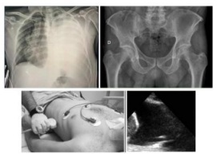
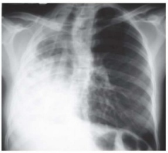
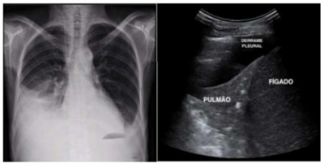

Questão 1 · Tipos e classif icação · 4000186895A Hipertensão Pulmonar Tromboembólica Crônica (HPTEC) é uma doença grave e debilitante:
A Causada pela oclusão do leito arterial pulmonar por êmbolos hemáticos e nunca por material fibroso induzido pela presença desses êmbolos.
B Causada pela desoclusão do leito arterial pulmonar por êmbolos hemáticos e por material fibroso induzido pela presença desses êmbolos.
C Causada pela oclusão do leito arterial pulmonar por êmbolos hemáticos e por material fibroso não induzido pela presença desses êmbolos.
D Causada pela oclusão do leito arterial pulmonar por êmbolos hemáticos e por material fibroso induzido pela presença desses êmbolos.
Questão 2 · Miocardite · 4000186894Miocardite pode ser desencadeada por mecanismos não infecciosos, como:
A A miocardite não tóxica (drogas, metais pesados, radiação), miocardite por mecanismos autoimunes e de hipersensibilidade (miocardite eosinofílica, colagenoses, induzida por vírus, rejeição do coração transplantado).
B A miocardite tóxica (drogas, metais pesados, radiação), miocardite por mecanismos autoimunes e nunca de hipersensibilidade (miocardite eosinofílica, colagenoses, induzida por vírus, rejeição do coração transplantado).
C A miocardite tóxica (drogas, metais pesados, radiação), miocardite por mecanismos autoimunes e de hipersensibilidade (miocardite eosinofílica, colagenoses, induzida por vírus, rejeição do coração transplantado).
D A miocardite atóxica (drogas, metais pesados, radiação), miocardite por mecanismos autoimunes e de hipersensibilidade (miocardite eosinofílica, colagenoses, induzida por vírus, não a rejeição do coração transplantado).
Questão 3 · Diagnóstico · 4000186893Para o cultivo de Leishmania:
A É fundamental utilizar meio monofásico, sendo vários deles empregados como fase líquida, e o Novy-MacNeal- Nicolle (NNN) ou ágar-sangue como fase semissólida. As culturas devem ser mantidas em estufa seca a 25º C.
B É fundamental utilizar meio bifásico, sendo vários deles empregados como fase líquida, e o Novy-MacNeal- Nicolle (NNN) ou ágar-sangue como fase semissólida. As culturas devem ser mantidas em estufa seca a 25º C.
C Não é fundamental utilizar meio bifásico, sendo vários deles empregados como fase líquida, e o Novy-MacNeal- Nicolle (NNN) ou ágar-sangue como fase semissólida. As culturas devem ser mantidas em estufa seca a 25º C.
D É fundamental utilizar meio bifásico, sendo vários deles empregados como fase líquida, e o Novy-MacNeal- Nicolle (NNN) ou ágar-sangue como fase semissólida. As culturas devem ser mantidas em estufa seca a 45º C.
Questão 4 · Diagnóstico · 4000186892No que diz respeito à tuberculose, a radiografia de tórax:
A Por sua dificuldade de execução, acessibilidade, baixo custo e baixa dose de radiação, não é o método de escolha na avaliação inicial.
B Por sua facilidade de execução, acessibilidade, baixo custo e baixa dose de radiação, nunca é o método de escolha na avaliação inicial.
C Por sua facilidade de execução, acessibilidade, baixo custo e baixa dose de radiação, é o método de escolha na avaliação inicial.
D Por sua facilidade de execução, acessibilidade, baixo custo e elevada dose de radiação, é o método de escolha na avaliação inicial.
Questão 5 · Radioterapia · Tratamento adjuvante · Tratamento neoadjuvante · 4000186891Na neoplasia de mama, é mais frequente cardiotoxicidade:
A Relacionada à radioterapia em pacientes com lesão em hemitórax esquerdo e naquelas em uso concomitante de antraciclinas.
B Relacionada à radioterapia em pacientes com lesão em hemitórax direito e naquelas em uso concomitante de antraciclinas.
C Relacionada à radioterapia em pacientes com lesão em hemitórax esquerdo e naquelas sem uso concomitante de antraciclinas.
D Não relacionada à radioterapia em pacientes com lesão em hemitórax esquerdo e naquelas em uso concomitante de antraciclinas.
Questão 6 · Diagnóstico dos linf omas clínico laboratorial citogenética e biologia molecular · Introdução aos linf omas · 4000186890Linfadenomegalias, notadamente em região inguinal por doença linfoproliferativa:
A Podem cursar com quadro clínico de edema pronunciado no membro, tanto pelo eventual componente compressivo venoso, mas não pela insuficiência na drenagem linfática regional.
B Não podem cursar com quadro clínico de edema pronunciado no membro, pelo eventual componente compressivo venoso.
C Podem cursar com quadro clínico de edema pronunciado no membro, tanto pelo eventual componente compressivo venoso, quanto pela insuficiência na drenagem linfática regional.
D Podem cursar com Quadro clínico de edema pronunciado no membro, mas não causado pelo eventual componente compressivo venoso, quanto pela insuficiência na drenagem linfática regional.
Questão 7 · Tratamento medicamentoso das dislipidemias · Resinas · Tratamento da hipercolesterolemia · 4000186889O fármaco Colestiramina:
A Diminui a absorção de vitaminas lipossolúveis (A, D, K, E) e não de ácido fólico, sendo eventualmente necessária a suplementação desses elementos.
B Aumenta a absorção de vitaminas lipossolúveis (A, D, K, E) e de ácido fólico, sendo eventualmente necessária a suplementação desses elementos.
C Diminui a absorção de vitaminas lipossolúveis (A, D, K, E) e de ácido fólico, sendo eventualmente necessária a suplementação desses elementos.
D Diminui a absorção de vitaminas lipossolúveis (A, D, K, E) e de ácido fólico, não sendo eventualmente necessária a suplementação desses elementos.
Questão 8 · Tratamento do choque cardiogênico · 4000186888O estágio D indica que as medidas de manejo inicial do choque cardiogênico
A Foram suficientes para restaurar a estabilidade hemodinâmica ou a perfusão tecidual após pelo menos 30 minutos de observação.
B Não foram suficientes para restaurar a estabilidade hemodinâmica ou a perfusão tecidual após pelo menos 30 minutos de observação.
C Não foram suficientes para restaurar a estabilidade hemodinâmica ou a perfusão tecidual após pelo menos 5 minutos de observação.
D Não foram suficientes para restaurar a estabilidade hemodinâmica, mas não a perfusão tecidual após pelo menos 30 minutos de observação.
Questão 9 · Medicamentos utilizados no tratamento da doenças reumáticas · Tratamento medicamentoso · 4000186887Imunossupressores biológicos São possíveis complicações do uso de anti-TNF no paciente com Artrite Reumatoide:
A Disfunção cardíaca, doenças desmielinizantes, fenômenos autoimunes (produção de autoanticorpos), vasculites, doença pulmonar intersticial e possível aumento do risco de linfoma.
B Disfunção cardíaca, doenças desmielinizantes, fenômenos autoimunes (produção de autoanticorpos), vasculites, doença pulmonar intersticial e possível redução do risco de linfoma.
C Disfunção cardíaca, mas não doenças desmielinizantes, e sim fenômenos autoimunes (produção de autoanticorpos), vasculites, doença pulmonar intersticial e possível aumento do risco de linfoma.
D Disfunção cardíaca, doenças desmielinizantes, fenômenos autoimunes (produção de autoanticorpos), vasculites, mas não com doença pulmonar intersticial.
Questão 10 · Erupção acneif orme · Acne · 4000186886Alteração no perfil lipídico é um efeito colateral comum ao uso da isotretinoína. Sendo correto que:
A Geralmente essas elevações são leves e determinam a interrupção do tratamento.
B Geralmente essas elevações são graves e não determinam a interrupção do tratamento.
C Sempre determinam a interrupção do tratamento.
D Geralmente essas elevações são leves e não determinam a interrupção do tratamento.
Questão 11 · Marcadores sorológicos · História natural da doença · 4000186885Sobre os anticorpos IgG-Anti-HBc, que persistem por toda a vida do paciente, independentemente do curso da infecção. Pode-se afirmar que:
A Em 5 semanas após a infecção, os níveis séricos de ALT e AST começam a se elevar, indicando dano hepático mediado por resposta a células T.
B Entre 10 e 15 semanas após a infecção, os níveis séricos de ALT e AST começam a se elevar, indicando dano hepático mediado por resposta a células T.
C Entre 10 e 15 semanas após a infecção, os níveis séricos de ALT e AST começam a se elevar, não indicando dano hepático mediado por resposta a células T.
D Entre 10 e 15 semanas após a infecção, os níveis séricos de ALT e AST começam a se elevar, indicando dano hepático nunca mediado por resposta a células T.
Questão 12 · Outros tratamentos · Hipoxemia e terapias de resgate · 4000186884O uso de oxigenação por membrana extracorpórea (ECMO) venoarterial periférica:
A É caracterizado pela redução na pós-carga do VE causado pelo fluxo sanguíneo da cânula de retorno arterial, que pode agravar a hipocontratilidade cardíaca gerando distensão ventricular e congestão pulmonar.
B É caracterizado pelo aumento na pré-carga do VE causado pelo fluxo sanguíneo da cânula de retorno arterial, que pode agravar a hipocontratilidade cardíaca gerando distensão ventricular e congestão pulmonar.
C É caracterizado pelo aumento na pós-carga do VE causado pelo fluxo sanguíneo da cânula de retorno arterial, que pode agravar a hipocontratilidade cardíaca gerando distensão ventricular e não a congestão pulmonar.
D É caracterizado pelo aumento na pós-carga do VE causado pelo fluxo sanguíneo da cânula de retorno arterial, que pode agravar a hipocontratilidade cardíaca gerando distensão ventricular e congestão pulmonar.
Questão 13 · Medicina transf usional · 4000186883A LDL-aférese (LA) e plasmaférese são duas opções de tratamento a partir de ltração sanguínea extracorpórea. Ambas envolvem sessões com duração de 2 a 3 horas, semanais ou quinzenais. Sendo correto que:
A No procedimento de plasmaférese, ocorre separação das células do sangue e plasma do paciente, de modo que as sanguíneas são retidas e misturadas em um fluido de reposição para retornar ao paciente, enquanto o plasma juntamente com as proteínas (incluindo o HDL-C) é descartado.
B No procedimento de plasmaférese, não ocorre separação das células do sangue e plasma do paciente, de modo que as sanguíneas são retidas e misturadas em um fluido de reposição para retornar ao paciente, enquanto o plasma juntamente com as proteínas (incluindo o HDL-C) é descartado.
C No procedimento de plasmaférese, ocorre separação das células do sangue e plasma do paciente, de modo que as sanguíneas nunca são retidas ou misturadas em um fluido de reposição para retornar ao paciente, enquanto o plasma juntamente com as proteínas (incluindo o HDL-C) é descartado.
D No procedimento de plasmaférese, ocorre separação das células do sangue e plasma do paciente, de modo que as sanguíneas são retidas e misturadas em um fluido de reposição para retornar ao paciente, enquanto o plasma juntamente com as proteínas (incluindo o HDL-C) não é descartado.
Questão 14 · Tratamento da Insuf iciência cardíaca · 4000186882Em pacientes com IC crônica e deficiência de ferro:
A O uso de carboximaltose férrica intravenosa demonstrou piora dos sintomas, da qualidade de vida e redução de hospitalizações.
B O uso de carboximaltose férrica intravenosa demonstrou melhora dos sintomas, da qualidade de vida e não redução de hospitalizações.
C O uso de carboximaltose férrica intravenosa demonstrou melhora dos sintomas, da qualidade de vida e redução de hospitalizações.
D O uso de carboximaltose férrica intravenosa nunca demonstrou melhora dos sintomas, da qualidade de vida e redução de hospitalizações.
Questão 15 · Tratamento f armacológico da insuf iciência cardíaca com f ração de ejeção reduzida · 4000186881O Mecamtiv mercabil é um ativador seletivo da miosina cardíaca, sendo correto que:
A Sua ação resulta na inativação e redução da taxa de hidrólise de ATP, melhorando a contração ventricular em casos de a Insuficiência Cardíaca com Fração de Ejeção Reduzida ICFEr.
B Sua ação resulta na ativação e aumento da taxa de hidrólise de ATP, melhorando a contração ventricular em casos de a Insuficiência Cardíaca com Fração de Ejeção Reduzida ICFEr.
C Sua ação nunca resulta na ativação e aumento da taxa de hidrólise de ATP, melhorando a contração ventricular em casos de a Insuficiência Cardíaca com Fração de Ejeção Reduzida ICFEr.
D Sua ação resulta na ativação e aumento da taxa de hidrólise de ATP, piorando a contração ventricular em casos de a Insuficiência Cardíaca com Fração de Ejeção Reduzida ICFEr.
Questão 16 · O agente etiológico · Patogenia o vírus da hepatite B HBV · 4000186880O HBV é capaz de infectar, primariamente, células hepáticas:
A Após ser transportado para o poro nuclear, o capsídeo não libera o genoma no interior do núcleo celular.
B Após ser transportado para o poro nuclear, o capsídeo libera o genoma no exterior do núcleo celular.
C Após ser transportado para o poro nuclear, o capsídeo libera o genoma no interior do núcleo celular.
D Após ser transportado para o poro nuclear, o capsídeo retém o genoma no interior do núcleo celular.
Questão 17 · Neuropediatria · 4000186879Você chega no seu plantão e encontra uma criança com o seguinte quadro: Criança de 5 anos foi internada por rebaixamento do nível de consciência. Ela apresenta evolução de 3 dias de sonolência, letargia e febre. À admissão foi iniciado o suporte clínico foi realizado exames para investigação. Sobre as condutas que devem ser realizadas neste momento inicial do caso clínico, assinale a alternativa incorreta.
A Proceder a intubação orotraqueal se a escala de coma de Glasgow menor ou igual a 8.
B Esperar os resultados antes de prescrever qualquer tratamento.
C Iniciar o aciclovir empírico.
D Iniciar a antibióticoterapia empírica.
Questão 18 · Anatomia e Fisiologia dos Núcleos da Base · Fenomenologia dos Distúrbios do Movimento · Tremor · 4000186878Sobre os distúrbios hipocinéticos de movimento assinale a alternativa incorreta.
A O parkinsonismo é causado por condições que reduzem a dopamina na via nigroestriatal.
B A bradicinesia consiste na redução progressiva da amplitude de movimento.
C O tremor em repouso é causado por anormalidade oscilatória exclusivamente na cápsula interna.
D Na rigidez do parkinsonismo não há aumento do tônus conforme aumenta a velocidade do movimento.
Questão 19 · Encef alites Autoimunes · Quadro Clínico · 4000186877De acordo com a WHO, assinale a alternativa que apresenta critérios de encefalite.
A Convulsão febril, bacterioscopia positiva do LCR, EEG anormal.
B Febre, letargia, convulsão.
C Cefaleia, vômitos, fraqueza muscular ascendente, febre.
D Afasia, convulsões focais, ataxia, hipogliocorraquia.
Questão 20 · Fisiopatologia · 4000186876Sobre a fisiopatologia da Síndrome de Guillain-Barré (SGB), assinale a alternativa incorreta.
A A fisiopatologia das diversas variantes de SGB é similar.
B A cascata imunológica na forma clássica (AIDP) é menos compreendida do que na forma axonal.
C Nas formas axonais agudas, as membranas axonais são o alvo primário da injúria imune.
D Na forma clássica (AIDP) o insulto imune se dá na bainha de mielina e nos componentes das células de Schwann relacionadas.
Questão 21 · Terapia de reposição de hemoderivados · Choque · O Choque hemorrágico · 4000186875Com relação à transfusão de hemocomponentes no politrauma é correto afirmar que:
A A transfusão de plaquetas é recomendada quando a contagem de plaquetas estiver abaixo de 150.000/L.
B Após a transfusão de hemácias, deve-se aguardar no mínimo 1 hora para se realizar a transfusão de plasmo fresco.
C Quando houver hemorragia massiva com risco de vida, é necessária a transfusão de hemácias do tipo O Rh negativo.
D A dose recomendada para transfusão de plaquetas é de 1UI para 25 Kg.
Questão 22 · Manif estações clínicas · 4000186874Assinale a alternativa incorreta sobre a apresentação e as características clínicas da doença meningocócica invasiva.
A Bacteremia oculta é uma forma clínica descrita frequentemente com N. meningitidis, e casos de doença meningocócica sem suspeita clínica são frequentes em pacientes ambulatoriais pediátricos febris.
B O choque meningocócico e a meningite podem coexistir e representar um desafio de manejo extraordinário, uma vez que a doença meningocócica invasiva pode progredir e evoluir rapidamente mesmo com suporte adequado.
C Meningococcemia é a forma clínica mais temida da infecção meningocócica e é causada por uma resposta inflamatória fulminante do hospedeiro à invasão bacteriana, caracterizando-se por um quadro de choque séptico com disfunção endotelial e coagulopatia grave.
D Sintomas gastrointestinais agudos como apresentação primária de doença meningocócica invasiva são raros e considerados inespecíficos, mas são frequentemente descritos em infecções por MenW.
Questão 23 · Fisiologia · Tosse · 4000186873Das alternativas apresentadas abaixo assinale a incorreta em relação à tosse.
A Manobra expulsiva forçada contra a glote fechada, gera um som característico, de controle voluntário ou não.
B Tem apenas a função de eliminar secreções e muco de grandes vias aéreas.
C Sintoma que funciona como sinal de alerta para várias doenças.
D Caracterizada como um reflexo protetor, trata-se de um mecanismo importante de defesa do organismo.
Questão 24 · Avaliação do Crescimento · Crescimento · 4000186872Durante as consultas de rotina de puericultura é importante que seja realizado a medida do perímetro cefálico das crianças até, por volta, dos 3 anos de idade. Assinale a alternativa que apresenta a forma correta de se realizar a medida do perímetro cefálico em crianças:
A Passar a fita pela parte mais alta do occipital, até as sobrancelhas, de forma bem justa.
B Passar a fita da glabela até a parte mais alta do occipital, passando pelas orelhas, de forma justa, mas não apertada.
C Passar a fita métrica pela glabela até a parte inferior do occipital, um pouco acima da nuca.
D Passar a fita da glabela até a parte mais alta do occipital, de forma justa, mas não muito apertada, com cuidado para não passar a fita por cima da orelha.
Questão 25 · Lesão renal aguda na criança · Etiologia Prérenal · Etiologias · 4000186871A Insu ciência Renal Aguda é a causa mais frequente de lesão renal aguda em neonatos, representando 85% dos casos. Com relação aos motivos de redução do fluxo sanguíneo renal, assinale a alternativa incorreta.
A Diminuição da permeabilidade capilar.
B Estados hipovolêmicos.
C Comprometimento do débito cardíaco.
D Síndrome compartimental abdominal.
Questão 26 · Síndromes clínicas da cardiopediatria · Cardiopediatria e Cardiopatias congênitas · 4000186870Insuf iciência cardíaca pediátrica Assinale a alternativa correta sobre a epidemiologia da Insuficiência Cardíaca em pediatria.
A Os casos de insuficiência cardíaca em crianças com cardiopatia congênita se manifestam após os 2 anos de idade.
B As cardiopatias congênitas têm incidência de 18:1000 nascidos vivos.
C A necessidade de intervenção cardíaca em crianças com cardiopatias congênitas é de 0,5%.
D Os pacientes com cardiomiopatias adquiridas podem ter apresentação mais tardia.
Questão 27 · Síndrome torácica aguda · 4000186869Pacientes com diagnóstico de anemia falciforme podem apresentar um quadro grave conhecido como Síndrome Torácica Aguda. Considerando esse diagnóstico, assinale a alternativa correta.
A O tratamento pode ser ambulatorial, dependendo da gravidade do caso.
B A depender da situação epidemiológica, o uso de oseltamivir pode ser indicado.
C Suas principais causas são não infecciosas, como edema pulmonar e atelectasias.
D A ressonância magnética é o principal exame de imagem para o diagnóstico.
Questão 28 · Novos Modos de Ventilação Mecânica · 4000186868A Ventilação de Alta Frequência (VAF) é uma modalidade ventilatória utilizada para pacientes com quadros de insu ciência respiratória grave. Assinale a alternativa incorreta sobre a VAF.
A Baixas frequências de ciclagem, com menos de 150 ciclos/minuto.
B Usa pressão de distensão constante.
C Pequenos volumes correntes.
D Inspiração e expiração ativas.
Questão 29 · Cuidados paliativos · 4000186867Segundo a definição da OMS de Cuidados Paliativos, assinale a alternativa correta.
A O cuidado paliativo só deve ser considerado para o paciente em fim de vida.
B O cuidado paliativo tem como objetivo aliviar o sofrimento apenas para o paciente.
C O cuidado paliativo é a abordagem realizada por equipe multidisciplinar e tem como objetivo promover a qualidade de vida de paciente e familiares diante de doenças que ameaçam a continuidade da vida.
D O cuidado paliativo deve ser realizado apenas pelo médico.
Questão 30 · Tratamento medicamentoso · Esquemas terapêuticos · Tratamento medicamentoso · 4000186866Sobre o tratamento da Hipertensão Arterial Sistêmica (HAS) em crianças e adolescentes, assinale a alternativa correta.
A Em portadores de disfunção sistólica, recomenda-se limitar o uso de bloqueadores de canais de cálcio.
B Em crianças, recomenda-se primeiramente o uso de alfa-bloqueadores e vasodilatadores.
C O alvo da terapia deve ser a PA abaixo do percentil 95 ou menor do que 140x90mmHg.
D Para adolescentes do sexo feminino, indica-se, preferencialmente, o uso de IECA e bloqueadores do receptor de angiotensina.
Questão 31 · Neurof isiologia · Comunicação Sináptica · Neurotransmissores · 4000186865Das alternativas apresentadas abaixo, qual não faz parte do diagnóstico diferencial de Hiperatividade Simpática Paroxística?
A Fratura óssea.
B Síndrome de abstinência.
C Síndrome da resposta inflamatória sistêmica.
D Anemia falciforme.
Questão 32 · Hemorragia Digestiva HD · Def inição e Etiologias · Condução Clínica · 4000186864Considerando a Hemorragia Digestiva em pediatria, assinale a alternativa incorreta.
A Na faixa etária pediátrica, a principal causa de hipertensão portal é a trombose portal, muito relacionada ao uso de cateteres umbilicais.
B A octreotida e a somatostatina são medicamentos que aumentam o tônus portal e, com isso, diminuem o risco de sangramento varicoso.
C A hipotensão é um sinal tardio nos casos de choque hemorrágico e está presente quando o paciente já apresentou perdas significativs, comunte acima de 25% da volemia efetiva.
D As transfusões excessivas em pacientes com sangramentos varicosos se relacionam ao maior risco de exacerbação da hemorragia.
Questão 33 · Antagonistas da Vitamina K · 4000186863A conduta mais adequada para um paciente que faz uso de warfarin no pré-operatório é:
A Suspender a dose de warfarin do dia da cirurgia.
B Ajustar a dose de warfarin para manter RNI abaixo de 1,0 no dia da cirurgia, iniciando heparina de baixo peso molecular em dose terapêutica.
C Substituir a dose de warfarin por ácido acetilsalicílico 7 dias antes do procedimento.
D Suspender a dose de warfarin cinco dias antes do procedimento, iniciando heparina de baixo peso molecular em dose terapêutica.
Questão 34 · Hemotórax · 4000186862Paciente masculino, 25 anos, vítima de acidente motociclístico de alta energia cinética em rodovia. É atendido pela equipe de resgate e transferido ao centro de trauma mais próximo. Admitido em prancha rígida, com colar cervical, manta térmica e máscara de oxigênio 15 l/min. Administrado durante o transporte 500ml de ringer simples aquecido, 1g de ácido tranexâmico, 4mg de mor na e 2g de dipirona devido à dor e sinais de hipovolemia. Sinais vitais na admissão: Frequência cardíaca 130 bpm; Pressão arterial 100 x 60 mmHg; Frequência respiratória 22 ipm; Saturação de oxigênio periférica 85%; Temperatura axilar 35,9 ºC; Atendido conforme o protocolo de trauma. A - Via aérea pérvia, com colar cervical. B - Murmúrio reduzido à esquerda, maciço à percussão, com expansibilidade reduzida. Ausência de en sema subcutâneo ou crepitação palpável. C - Taquicárdico, bulhas rítmicas, normofonéticas, ausência de estase jugular patológica. Tempo de enchimento capilar de 3 segundos. Extremidades frias com pulso liforme. D - Pupilas isocóricas, fotorreagentes, sem dé cits focais. Abertura ocular espontânea, obedece a comandos verbais e está orientado. E - Sem lesões ameaçadoras à vida aparentes. Foi submetido aos exames abaixo. A principal hipótese diagnóstica é:

A Hemotórax.
B Pneumotórax hipertensivo.
C Tamponamento cardíaco.
D Contusão pulmonar.
Questão 35 · Hemotórax · 4000186861Paciente masculino, 25 anos, vítima de acidente motociclístico de alta energia cinética em rodovia. É atendido pela equipe de resgate e transferido ao centro de trauma mais próximo. Admitido em prancha rígida, com colar cervical, manta térmica e máscara de oxigênio 15 l/min. Administrado durante o transporte 500ml de ringer simples aquecido, 1g de ácido tranexâmico, 4mg de mor na e 2g de dipirona devido à dor e sinais de hipovolemia. Sinais vitais na admissão: Frequência cardíaca 130 bpm; Pressão arterial 100 x 60 mmHg; Frequência respiratória 22 ipm; Saturação de oxigênio periférica 85%; Temperatura axilar 35,9 ºC; Atendido conforme o protocolo de trauma. A - Via aérea pérvia, com colar cervical. B - Murmúrio reduzido à esquerda, maciço à percussão, com expansibilidade reduzida. Ausência de en sema subcutâneo ou crepitação palpável. C - Taquicárdico, bulhas rítmicas, normofonéticas, ausência de estase jugular patológica. Tempo de enchimento capilar de 3 segundos. Extremidades frias com pulso liforme. D - Pupilas isocóricas, fotorreagentes, sem dé cits focais. Abertura ocular espontânea, obedece a comandos verbais e está orientado. E - Sem lesões ameaçadoras à vida aparentes. Foi submetido aos exames abaixo. A conduta mais adequada no caso acima é:

A Toracostomia com drenagem torácica fechada.
B Toracotomia de urgência.
C Toracotomia de emergência.
D Toracotomia de reanimação.
Questão 36 · Introdução · Manif estações Clínicas e Exame Físico · Classif icações · 4000186860Nos pacientes com obstrução colônica do tipo “alça fechada” o local com maior risco para perfuração é:
A Válvula ileocecal.
B Cólon ascendente.
C Ceco.
D Cólon transverso.
Questão 37 · Tipos Histológicos · Sarcomas de Partes Moles · Apresentação Clínica · 4000186859Entre os tumores de partes moles no paciente pediátrico, o tipo de sarcoma mais comum é:
A Adenossarcoma embrionário.
B Leiomiossarcoma.
C Rabdomiossarcoma.
D Tumor desmoide.
Questão 38 · Neoplasias e Cistos Renais · Neoplasias Renais Benignas · Nef roblastoma ou Tumor de Wilms · 4000186858Sobre os tumores renais na faixa etária pediátrica, assinale a alternativa que corresponde à neoplasia considerada benigna, sem necessidade de adjuvância no pós-operatório.
A Tumor de Wilms.
B Neuroblastoma.
C Hemangioendotelioma kaposiforme.
D Nefroma mesoblástico congênito.
Questão 39 · História Clínica e Exame f ísico · Diagnóstico e Exames Complementares · Atelectasia · 4000186857Paciente masculino, 33 anos, em segundo dia pós-operatório de colecistectomia videolaparoscópica convertida para convencional, queixando-se de falta de ar e dor no ombro direito. Nega dor torácica. Nega tosse. Nega parada de evacuação de atos e fezes. No momento em regular estado geral, dispneico, anictérico, febril. Murmúrio reduzido em base direita, com expansibilidade reduzida. Ausculta cardiológica sem alterações. Panturrilhas sem empastamento. Sinais Vitais: PA: 160 x 90 mmHg, FC: 95 bpm, FR: 25 irpm, Sat O2: 90% T: 38,3ºC Foi submetido a radiogra a de tórax (abaixo). A principal hipótese diagnóstica é:

A Atelectasia.
B Pneumonia lobar superior.
C Pneumotórax.
D Quilotórax.
Questão 40 · Conduta e Tratamento · Atelectasia · 4000186856Paciente masculino, 33 anos, em segundo dia pós-operatório de colecistectomia videolaparoscópica convertida para convencional, queixando-se de falta de ar e dor no ombro direito. Nega dor torácica. Nega tosse. Nega parada de evacuação de atos e fezes. No momento em regular estado geral, dispneico, anictérico, febril. Murmúrio reduzido em base direita, com expansibilidade reduzida. Ausculta cardiológica sem alterações. Panturrilhas sem empastamento. Sinais Vitais: PA: 160 x 90 mmHg, FC: 95 bpm, FR: 25 irpm, Sat O2: 90% T: 38,3ºC Foi submetido a radiogra a de tórax (abaixo). A conduta mais adequada para este caso é:

A Antibioticoterapia.
B Drenagem pleural.
C Fisioterapia e ventilação com pressão positiva.
D Dieta zero e Octreotide.
Questão 41 · Classif icação · 4000186855Paciente jovem, masculino, é submetido a cirurgia para correção de hérnia inguinal. No intraoperatório notou-se que a hérnia deslizava medialmente à artéria epigástrica inferior associada a fraqueza da parede posterior do abdome. A hérnia deste doente, segundo Nyhus é:
A I
B II
C IIIb
D IIIa
Questão 42 · Síndrome de Polipose Hamartomatosa Hereditária · 4000186854Qual das síndromes abaixo tem maior associação com pólipos hamartosos?
A Turcot.
B Peutz Jeghers.
C Amyand.
D Polipose Adenomatosa Familiar.
Questão 43 · Exames Endoscópicos · Manif estações Clínicas · Doença de Crohn · 4000186853Paciente jovem realizou colonoscopia para investigação de diarreia crônica. O exame revelou lesões do tipo descontínuas, com duas áreas afetadas separadas por uma porção de intestino normal, semelhante a uma superfície em aspecto de paralelepípedo. O exame histopatológico mostra agregados linfocitários na submucosa e no exterior da camada muscular própria, com presença de granulomas epitelióides. A principal hipótese diagnostica é:
A Retocolite ulcerativa.
B Colite pseudomembranosa.
C Doença de Crohn.
D Polipose adenomatosa familiar.
Questão 44 · Hepatobiliares · 4000186852A retocolite ulcerativa é uma doença inflamatória intestinal crônica não contagiosa, em que há in amação e ulcerações no intestino grosso (cólon) e no reto em sua camada mais super cial, a mucosa. A manifestação hepática mais comum desta patologia é:
A Colangite esclerosante primária.
B Hepatite fulminante.
C Fibrose portal.
D Insuficiência hepática.
Questão 45 · Acidose metabólica · Acidose metabólica com ânion gap aumentado · Choque séptico · 4000186851Paciente de 14 anos de idade é internado em leito de terapia intensiva devido a síndrome respiratória aguda grave por provável pneumonia adquirida na comunidade. Tem início dos sintomas há 6 dias com febre, tosse, queda do estado geral e dispneia progressiva. Ao exame físico encontra-se sonolento, obnubilado, corado, hidratado, dispneico, taquipneico, anictérico, acianótico, febril. Hipotenso com bulhas cardíacas rítmicas, taquicárdicas, sem sopros audíveis, com tempo de enchimento capilar de 4 segundos. Murmúrio vesicular presente bilateral, abolido em base direita, com alguns estertores crepitantes e percussão submaciça neste mesmo hemitórax. Glasgow 11, pupilas isocóricas. No momento com suporte de oxigênio (máscara não reinalante com uxo de 10 l/min). Após ressuscitação volêmica adequada, o paciente apresenta os seguintes sinais vitais: Frequência cardíaca: 135 bpm / pressão arterial: 70/30 mmHg / frequência respiratória: 31 ipm / saturação periférica de O2: 89% / temperatura axilar: 37,9ºC. Exames séricos revelaram leucocitose com desvio a esquerda e predomínio de polimorfonucleares associada a plaquetopenia de 42.000mm3. Foram realizados também a radiogra a de tórax abaixo e ecogra a torácica. Gasometria arterial coletada com suporte de O2 acima descrito: Assinale a alternativa com as principais hipóteses diagnósticas.

A Pneumonia com derrame pleural; sepse com disfunção orgânica sem choque; acidose metabólica isolada.
B Pneumonia com derrame pleural; sepse com disfunção orgânica sem choque; acidose respiratória isolada.
C Pneumonia com derrame pleural; choque séptico com disfunção orgânica; acidose metabólica isolada.
D Pneumonia com derrame pleural; choque séptico com disfunção orgânica; acidose metabólica primária com acidose respiratória superposta.
Questão 46 · Manejo cirúrgico · Tratamento · Deloculação · 4000186850Paciente de 14 anos de idade é internado em leito de terapia intensiva devido a síndrome respiratória aguda grave por provável pneumonia adquirida na comunidade. Tem início dos sintomas há 6 dias com febre, tosse, queda do estado geral e dispneia progressiva. Ao exame físico encontra-se sonolento, obnubilado, corado, hidratado, dispneico, taquipneico, anictérico, acianótico, febril. Hipotenso com bulhas cardíacas rítmicas, taquicárdicas, sem sopros audíveis, com tempo de enchimento capilar de 4 segundos. Murmúrio vesicular presente bilateral, abolido em base direita, com alguns estertores crepitantes e percussão submaciça neste mesmo hemitórax. Glasgow 11, pupilas isocóricas. No momento com suporte de oxigênio (máscara não reinalante com uxo de 10 l/min). Após ressuscitação volêmica adequada, o paciente apresenta os seguintes sinais vitais: Frequência cardíaca: 135 bpm / pressão arterial: 70/30 mmHg / frequência respiratória: 31 ipm / saturação periférica de O2: 89% / temperatura axilar: 37,9ºC. Exames séricos revelaram leucocitose com desvio a esquerda e predomínio de polimorfonucleares associada a plaquetopenia de 42.000mm3. Foram realizados também a radiogra a de tórax abaixo e ecogra a torácica. Gasometria arterial coletada com suporte de O2 acima descrito: Sobre o caso acima, assinale a correta

A A drenagem torácica nestes casos só pode ser realizada após transfusão de plasma fresco congelado.
B O paciente tem indicação de videotoracoscopia higiênica de emergência.
C Pode-se realizar toracocentese diagnóstica e posteriormente toracostomia em sistema fechado para otimizar a expansibilidade pulmonar e eventualmente fibrinólise pleural caso indicada.
D O paciente não tem indicação de análise do líquido pleural.
Questão 47 · Estadiamento · Adenocarcinoma de Esôf ago · 4000186849Paciente de 71 anos em investigação de disfagia e perda ponderal é submetido a endoscopia digestiva alta que evidencia lesão ulcerada em esôfago distal, distando 3 centímetros da cárdia. O exame histopatológico revela adenocarcinoma infiltrativo. Pela classificação de Siewert, este paciente é classificado em tipo:
A II
B I
C III
D IV
Questão 48 · Tratamento · Trauma Hepático · 4000186848Paciente masculino, jovem, é vítima de acidente automobilístico há 2 horas em rodovia, de alta energia cinética. É transferido ao centro de trauma mais próximo já com via aérea definitiva garantida por tubo orotraqueal devido a rebaixamento do nível de consciência no local. É admitido nas seguintes condições: A: Intubado com saturação periférica de 98%. B: Murmúrio vesicular presente bilateral. C: PA: 140 x 60 mmHg; FC: 75 bpm; FAST positivo no espaço hepatorrenal. D: Escala de Glasgow de 3T (sob sedação). E: Sem outras alterações. Foi submetido à tomogra a de corpo inteiro que evidenciou lesão axonal difusa, optado pela equipe da neurocirúrgica por tratamento conservador e moderada quantidade de líquido livre na cavidade peritoneal com lesão hepática grau III em lobo direito sem extravasamento de contraste na fase arterial. A conduta mais adequada para este caso é:
A Laparotomia exploradora.
B Arteriografia com embolização.
C Reavaliação seriada com exame físico.
D Nova tomografia de abdome em 12 horas.
Questão 49 · Dosagem beta hCG · Ultrassonograf ia · Diagnóstico · 4000186847Sobre a Mola Hidatiforme considere as seguintes assertivas: I. O BHCG geralmente é inferior ao da gestação normal na mesma idade gestacional. II. A altura uterina é maior que o esperado para a idade gestacional. III. O achado ultrassonográfico clássico é a imagem em “sinal da correia dentada”. Está(ão) correta(s) a(s) afirmativa(s):
A I e II, apenas.
B II e III, apenas.
C II, apenas.
D III, apenas.
Questão 50 · Ranelato de estrôncio · 4000186846Entre as opções não hormonais para o tratamento ou prevenção de osteoporose na menopausa, a droga que exerce duplo efeito, diminuindo a reabsorção e aumentando a formação de osso é:
A Risendronato.
B Ranelato de estrôncio.
C Ibandronato.
D Teriparatida.
Questão 51 · Investigação do obito f etal · Composição do líquido amniótico · Morte f etal Óbito f etal OF · 4000186845O encontro de líquido amniótico de característica “achocolatado” é sugestivo de:
A Doença hemolítica perinatal.
B Óbito fetal.
C Corioamnionite.
D Mecônio.
Questão 52 · Fisiopatologia · Quadro clínico · 4000186844Em paciente com diagnóstico de vaginose bacteriana, o odor de peixe liberado após aplicação de hidróxido de potássio é devido à liberação de:
A ácido lático.
B cadaverina e putrescina.
C ácido málico.
D ácido acético.
Questão 53 · Fatores de risco · 4000186843Em relação à placenta prévia, assinale um fator não relacionado:
A pré-eclâmpsia.
B multiparidade.
C uso de cocaína.
D tabagismo.
Questão 54 · Ciclo uterino · Ciclo menstrual · 4000186842A camada do endométrio que não sofre proliferação significativa durante o ciclo menstrual e é responsável pela regeneração endometrial se chama:
A funcional.
B esponjosa.
C basal.
D compacta.
Questão 55 · Investigação diagnóstica e tratamento · Trombof ilia na gestação · 4000186841Abortamento habitual Abortamento de repetição e insuf iciência istmocervical Gestante com antecedente de 3 perdas gestacionais entre 10 e 14 semanas, encontra-se atualmente com idade gestacional de 8 semanas. Além dos exames de rotina, o que mais deve ser investigado no momento nesse caso é:
A Insuficiência de Corpo Lúteo.
B Síndrome Antifosfolípide.
C Placentação Anômala.
D Endometriose.
Questão 56 · Cistite · Inf ecção urinária na gestação · 4000186840Uma gestante com 29 semanas comparece à consulta com queixa de disúria. O patógeno mais comumente envolvido na gênese desta infecção é:
A Echerichia coli
B Staphylococcus saprophyticus
C Proteus mirabilis
D Klebsiela pneumoniae
Questão 57 · Etiologia · 4000186839São patógenos que geralmente causam infecção genital alta:
A Cândida
B Gardnerela
C Clamídia
D Tricomonas
Questão 58 · Determinação da corionicidade e amnionicidade · Tipos de gestações múltiplas · 4000186838Gestante comparece a consulta de rotina do pré-natal, apresentando ultrassom evidenciando gestação gemelar com sinal do T invertido. Provavelmente é uma gemelaridade:
A Monocoriônica / monoamniótica.
B Dicoriônica / diamniótica.
C Com óbito fetal.
D Monocoriônica / diamniótica.
Questão 59 · Modif icações f isiológicas · Estrogênios · 4000186837A conversão de androstenediona em estrona, no tecido adiposo, é a principal via de produção estrogênica:
A na menopausa.
B na puberdade.
C no menacme.
D durante a gravidez.
Questão 60 · Cardiotocograf ia intraparto · Interpretação · Parâmetros da cardiotocograf ia · 4000186836O exame de cardiotocogra a que demonstra traçado de desacelerações periódicas com intervalo de decalagem de 50 segundos tem o nome de:
A Acelerações transitórias.
B Desacelerações.
C DIP II.
D Padrão sinusoidal.
Questão 61 · Escassez de leite · 4000186835O estímulo à lactação, em puérperas com dificuldade de amamentar por baixa produção de leite, pode ser realizada com:
A Cabergolina.
B Estrógenos.
C Lanolina tópica.
D Domperidona.
Questão 62 · Gestantes · Medicamentos utilizados · 4000186834Uma gestante com diagnóstico de asma severa deve evitar medicamentos do tipo:
A Corticoides.
B Beta bloqueadores.
C Alfametildopa.
D Benzodiazepínicos.
Questão 63 · Ações do estrogênio e progesterona em outros órgãos · Colo uterino · Outros · 4000186833Em uma mulher de 25 anos, que não utiliza qualquer método contraceptivo, durante a ovulação, ocorre eliminação de grande quantidade de muco cervical, que faz com que ela tenha que utilizar absorvente íntimo. Esse efeito se deve por ação direta de:
A Progesterona.
B Prolactina.
C Estradiol.
D FSH.
Questão 64 · Anemias na gestação · Uso de medicações · 4000186832O Ferro elementar pode aumentar o estresse oxidativo placentário e, portanto, deve ter seu uso limitado na gravidez:
A no segundo trimestre.
B no primeiro trimestre.
C no terceiro trimestre.
D durante toda a gestação.
Questão 65 · Prática de atividade f ísica no diabetes mellitus tipo 2 · 4000186831É recomendado para pessoas com DM2, a prática de exercícios combinados, resistidos e aeróbicos:
A Pelo menos um ciclo de 10 a 15 repetições de cinco ou mais exercícios, duas a três sessões por semana, em dias não consecutivos e, no mínimo, 50 minutos semanais de caminhada moderada ou de alta intensidade, sem permanecer mais do que dois dias consecutivos sem atividade.
B Pelo menos um ciclo de 10 a 15 repetições de cinco ou mais exercícios, duas a três sessões por semana, em dias não consecutivos e, no mínimo, 150 minutos semanais de caminhada moderada ou de alta intensidade, sem permanecer mais do que dois dias consecutivos sem atividade.
C Pelo menos um ciclo de 10 a 15 repetições de cinco ou mais exercícios, duas a três sessões por semana, em dias não consecutivos e, no mínimo, 150 minutos semanais de caminhada moderada ou de alta intensidade, sem permanecer mais do que dois meses consecutivos sem atividade.
D Pelo menos um ciclo de 5 repetições de cinco ou mais exercícios, duas a três sessões por semana, em dias não consecutivos e, no mínimo, 150 minutos semanais de caminhada moderada ou de alta intensidade, sem permanecer mais do que dois dias consecutivos sem atividade.
Questão 66 · COVID 19 · 4000186830Os indivíduos com sintomas compatíveis com a COVID-19 devem ser orientados:
A A procurar um serviço de saúde para atendimento, utilizando máscara, praticando etiqueta respiratória, mantendo distanciamento social e seguindo as orientações de isolamento.
B A não procurar um serviço de saúde para atendimento, utilizando máscara, praticando etiqueta respiratória, mantendo distanciamento social e seguindo as orientações de isolamento.
C A procurar um serviço de saúde para atendimento, não utilizando máscara, praticando etiqueta respiratória, mantendo distanciamento social e seguindo as orientações de isolamento.
D A procurar um serviço de saúde para atendimento, utilizando máscara, praticando etiqueta respiratória, sem distanciamento social e seguindo as orientações de isolamento.
Questão 67 · Dependência de Tabaco · 4000186829O tratamento farmacológico deve ser utilizado objetivando a complementação da terapia cognitivo-comportamental, tendo também como efeito o alívio dos sintomas da abstinência. Sendo correto que:
A Independentemente da idade, deixar de fumar pode reduzir a expectativa de vida, melhorar a saúde e a qualidade de vida. Aqueles idosos que decidem fazer uma tentativa têm elevada taxa de sucesso.
B Independentemente da idade, deixar de fumar nunca pode aumentar a expectativa de vida, melhorar a saúde e a qualidade de vida. Aqueles idosos que decidem fazer uma tentativa têm elevada taxa de sucesso.
C Independentemente da idade, deixar de fumar pode aumentar a expectativa de vida, melhorar a saúde e a qualidade de vida. Aqueles idosos que decidem fazer uma tentativa têm elevada taxa de sucesso.
D Independentemente da idade, deixar de fumar pode aumentar a expectativa de vida, melhorar a saúde e não a qualidade de vida. Aqueles idosos que decidem fazer uma tentativa têm elevada taxa de sucesso.
Questão 68 · Prática de atividade f ísica no diabetes mellitus tipo 2 · 4000186828A estratégia ideal para pessoas com diabetes:
A Nunca deve envolver a combinação de exercício aeróbico com exercício resistido, sem permanecer mais do que dois dias consecutivos sem atividade.
B Deve envolver a combinação de exercício aeróbico com exercício resistido, sem permanecer mais do que dois dias consecutivos sem atividade.
C Deve envolver a combinação de exercício aeróbico com exercício resistido, sem permanecer mais do que dois meses consecutivos sem atividade.
D Deve envolver a combinação de exercício aeróbico e nunca com exercício resistido, sem permanecer mais do que dois dias consecutivos sem atividade.
Questão 69 · Prevenção Primária · Estratif icação do risco cardiovascular global e metas terapêuticas · 4000186827Em um cenário de prevenção primária, pode-se afirmar que:
A A redução de eventos vasculares é comparativamente menor do que na prevenção secundária, mas ainda assim robustamente custo-efetiva em pacientes diabéticos e não-diabéticos com risco CV > 7,5% em 10 anos
B A redução de eventos vasculares é comparativamente maior do que na prevenção secundária, mas ainda assim robustamente custo-efetiva em pacientes diabéticos e não-diabéticos com risco CV > 7,5% em 10 anos.
C A redução de eventos vasculares não é comparativamente menor do que na prevenção secundária, mas ainda assim robustamente custo-efetiva em pacientes diabéticos e não-diabéticos com risco CV > 7,5% em 10 anos.
D A redução de eventos vasculares é comparativamente menor do que na prevenção primaria, mas ainda assim robustamente custo-efetiva em pacientes diabéticos e não-diabéticos com risco CV > 7,5% em 10 anos.
Questão 70 · Prática de atividade f ísica no diabetes mellitus tipo 2 · 4000186826Após o exercício prolongado, a captação da glicose:
A Permanece reduzida por até duas horas, por mecanismos independentes da insulina, e por até 48 horas, por meio de mecanismos dependentes da insulina.
B Permanece aumentada por até duas horas, por mecanismos independentes da insulina, e por até 48 horas, por meio de mecanismos dependentes da insulina.
C Permanece aumentada por até duas horas, por mecanismos independentes da insulina, e por até 48 horas, por meio de mecanismos não dependentes da insulina.
D Permanece aumentada por até doze horas, por mecanismos independentes da insulina, e por até 48 horas, por meio de mecanismos dependentes da insulina.
Questão 71 · Estratif icação do risco cardiovascular global e metas terapêuticas · 4000186825Em relação ao tratamento, sendo os idosos muitas vezes já de alto risco (devido ao fator idade), na abordagem da dislipidemia:
A deve-se levar mais em consideração, quando da decisão terapêutica, o bom estado geral e mental do paciente, suas condições socioeconômicas, o apoio familiar, as comorbidades presentes e o uso de outros fármacos que irão influenciar a adesão e a manutenção da terapêutica.
B não deve-se levar mais em consideração, quando da decisão terapêutica, o bom estado geral e mental do paciente, suas condições socioeconômicas, o apoio familiar, as comorbidades presentes e o uso de outros fármacos que irão influenciar a adesão e a manutenção da terapêutica.
C deve-se levar mais em consideração, quando da decisão terapêutica, o bom estado geral e mental do paciente, nunca suas condições socioeconômicas, o apoio familiar, as comorbidades presentes e o uso de outros fármacos que irão influenciar a adesão e a manutenção da terapêutica.
D deve-se levar mais em consideração, quando da decisão terapêutica, o bom estado geral e mental do paciente, suas condições socioeconômicas, o apoio familiar, as comorbidades presentes e o uso de outros fármacos que irão influenciar a adesão e não a manutenção da terapêutica.
Questão 72 · Metas de controle glicêmico · Metas de controle · 4000186824As diretrizes da Sociedade Brasileira de Diabetes (SBD), da Sociedade Brasileira de Endocrinologia e Metabologia (SBEM) e da Sociedade Brasileira de Cardiologia (SBC) de 2017:
A Recomendam que pessoas com diabetes adultas, não gestantes, sem limitação na expectativa de vida, devem buscar uma HbA1c menor que 9%.
B Recomendam que pessoas com diabetes adultas, não gestantes, sem limitação na expectativa de vida, devem buscar uma HbA1c maior que 7%.
C Recomendam que pessoas com diabetes adultas, não gestantes, sem limitação na expectativa de vida, devem buscar uma HbA1c menor que 5%.
D Recomendam que pessoas com diabetes adultas, não gestantes, sem limitação na expectativa de vida, devem buscar uma HbA1c menor que 7%.
Questão 73 · Puerpério f isiológico · Def inição · 4000186823O puerpério se inicia imediatamente após o parto e dura:
A em média (visto que o término é imprevisto), duas semanas após este, havendo variabilidade na duração entre as mulheres.
B em média (visto que o término é imprevisto), seis semanas após este, havendo variabilidade na duração entre as mulheres.
C em média (visto que o término é imprevisto), seis semanas após este, não havendo variabilidade na duração entre as mulheres.
D em média (visto que o término é previsto), seis semanas após este, nunca havendo variabilidade na duração entre as mulheres.
Questão 74 · Etiologia · Principais síndromes genéticas e neonatais · 4000186822A obesidade é uma das manifestações descritas em 24 doenças mendelianas:
A Como, por exemplo, a síndrome de Prader-Willi, e em nove tipos de doenças monogênicas não mendelianas, todas não causando obesidade precoce na infância e que têm sido recentemente descritas.
B Como, por exemplo, a síndrome de Prader-Willi, e em nove tipos de doenças monogênicas não mendelianas, todas causando obesidade precoce na infância e que têm sido recentemente descritas.
C Exceto a síndrome de Prader-Willi, e em nove tipos de doenças monogênicas não mendelianas, todas causando obesidade precoce na infância e que têm sido recentemente descritas.
D Como, por exemplo, a síndrome de Prader-Willi, e em nove tipos de doenças monogênicas não mendelianas, todas evitando obesidade precoce na infância e que têm sido recentemente descritas.
Questão 75 · Classif icação das dislipidemias · Classif icação etiológica · 4000186821Nos idosos ao contrário dos adultos jovens, dislipidemias primárias de novo são raras, sendo:
A mais frequentes as dislipidemias secundárias ao hipotireoidismo (principalmente nas mulheres), diabetes melito, intolerância à glicose, síndrome nefrótica, obesidade, alcoolismo ou uso de medicamentos, como diuréticos tiazídicos e nunca bloqueadores beta-adrenérgicos não seletivos.
B mais raras as dislipidemias secundárias ao hipotireoidismo (principalmente nas mulheres), diabetes melito, intolerância à glicose, síndrome nefrótica, obesidade, alcoolismo ou uso de medicamentos, como diuréticos tiazídicos e bloqueadores beta-adrenérgicos não seletivos.
C mais frequentes as dislipidemias secundárias ao hipotireoidismo (principalmente nas mulheres), diabetes melito, intolerância à glicose, síndrome nefrótica, obesidade, alcoolismo ou uso de medicamentos, como diuréticos tiazídicos e bloqueadores beta- adrenérgicos não seletivos.
D mais frequentes as dislipidemias secundárias ao hipotireoidismo (principalmente nas mulheres), e não ao diabetes melito, intolerância à glicose, síndrome nefrótica, obesidade, alcoolismo ou uso de medicamentos, como diuréticos tiazídicos e bloqueadores beta-adrenérgicos não seletivos.
Questão 76 · Atributos gerais da Atenção Primária à Saúde APS · 4000186820Atenção Primária à Saúde (APS) atuando na identi cação precoce de casos graves, com o adequado manejo das pessoas com síndrome gripal (SG), está:
A Potencializando as ações de cuidado longitudinal aos cidadãos, além da coordenação das ações fora dos demais níveis de atenção da Rede da Atenção à Saúde (RAS).
B Potencializando as ações de cuidado longitudinal aos cidadãos, além da coordenação das ações entre os demais níveis de atenção da Rede da Atenção à Saúde (RAS).
C Potencializando as ações sem cuidado longitudinal aos cidadãos, além da coordenação das ações entre os demais níveis de atenção da Rede da Atenção à Saúde (RAS).
D Potencializando as ações de cuidado longitudinal aos cidadãos, contra a coordenação das ações entre os demais níveis de atenção da Rede da Atenção à Saúde (RAS).
Questão 77 · Metas de controle glicêmico · Metas de controle · Acompanhamento ambulatorial · 4000186819A (CONTINUOUS GLUCOSE MONITORING) CGM promove medidas contínuas da glicose intersticial, permitindo detectar variações e:
A gerando indicadores clinicamente que se correlacionam com o controle glicêmico e a HbA1c.
B gerando indicadores clinicamente que se correlacionam com o controle glicêmico e não a HbA1c.
C gerando indicadores clinicamente que nunca se correlacionam com o controle glicêmico e a HbA1c.
D não gerando indicadores clinicamente que se correlacionam com o controle glicêmico e a HbA1c.
Questão 78 · Etiologia · Fisiopatogenia · 4000186818Em gêmeos mono e dizigóticos estudados aos 7 anos de idade, pode-se afirmar sobre a origem da obesidade:
A Fatores genéticos não desempenharam papel decisivo na origem da obesidade, mais importante do que a nutrição intrauterina e as influências ambientais alimentares.
B Fatores genéticos desempenharam papel decisivo na origem da obesidade, menos importante do que a nutrição intrauterina e as influências ambientais alimentares.
C Fatores genéticos desempenharam papel pequeno na origem da obesidade, mais importante do que a nutrição intrauterina e as influências ambientais alimentares.
D Fatores genéticos desempenharam papel decisivo na origem da obesidade, mais importante do que a nutrição intrauterina e as influências ambientais alimentares.
Questão 79 · Tratamento medicamentoso · Tratamento · Indicação de tratamento · 4000186817Devem ser observados os critérios de inclusão e exclusão de pacientes constantes para Hepatite C:
A Duração e a monitorização do tratamento, bem como a verificação periódica das doses prescritas e não as dispensadas, a adequação de uso do medicamento e os critérios de interrupção do tratamento.
B Duração e a monitorização do tratamento, bem como a verificação periódica das doses prescritas e dispensadas, a adequação de uso do medicamento e os critérios de interrupção do tratamento.
C Duração e a monitorização do tratamento, bem como a verificação periódica das doses prescritas e dispensadas, a adequação de uso do medicamento e nunca os critérios de interrupção do tratamento.
D Duração e não a monitorização do tratamento, bem como a verificação periódica das doses prescritas e dispensadas, a adequação de uso do medicamento e os critérios de interrupção do tratamento.
Questão 80 · Metabolismo lipídico · 4000186816Os SAT são capazes de modular genes envolvidos na síntese de lípides. Sendo correto que: Respostas: 1 12 23 34 45 56 67 78
A Os SAT reduzem a expressão hepática do PGC-1
B Os SAT induzem a expressão hepática do PGC-1
C Os SAT induzem a expressão hepática do PGC-1
D Os SAT induzem a expressão hepática do PGC-1